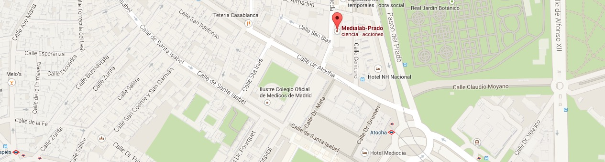

Se presentará la herramienta Dr. Scratch que tiene como objetivo ofrecer una vía de aprendizaje y realimentación sobre la calidad de los proyectos desarrollados en Scratch. Dr. Scratch incluye técnicas de ludificación (gamification) de manera que el alumno puede ganar medallas y mejorar sus habilidades de programación.
Este taller está destinado a docentes de primaria y secundaria.
La inscripción (y la asistencia) es gratuita.
El registro obligatorio para recibir certificado de asistencia.
Los asistentes al taller deberán traer un ordenador portátil. Al finalizar la sesión, se proporcionarán certificados de asistencia a los participantes que se hayan registrado previamente (hasta el 26 de febrero).
Haz clic aquí para obtener el PDF
Medialab-Prado Calle Alameda,15 28014(Madrid)
